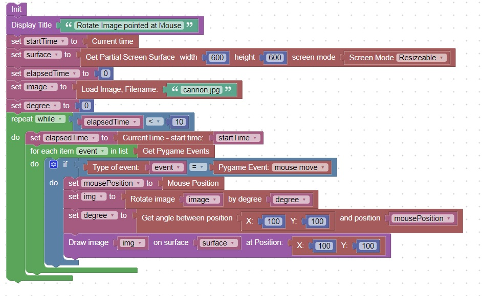
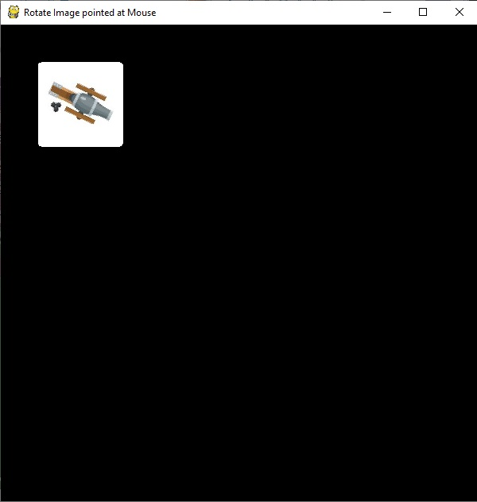

<h1>Rotate an Image to point at the mouse</h1>
<h2>New Concepts</h2>
   <table border="2px solid">
     <tr><th bgcolor="blue">Concept</th><th bgcolor="blue">Description</th></tr>
     <tr><td><center>1</center></td><td>The angle between 2 positions can be determined using the Get angle block</td></tr>
     <tr><td><center>2</center></td><td>You can use the quit event to break out of a while True loop</td></tr>
   </table>   
<h2>Code</h2>
This code will rotate an image to point at the mouse until the quit event occurs.<br>
<br>
Here is what the screen looks like<br>
<br>
<hr>
<center></center>